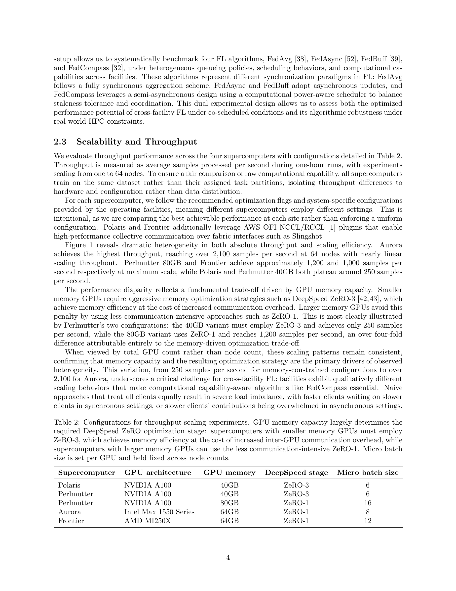
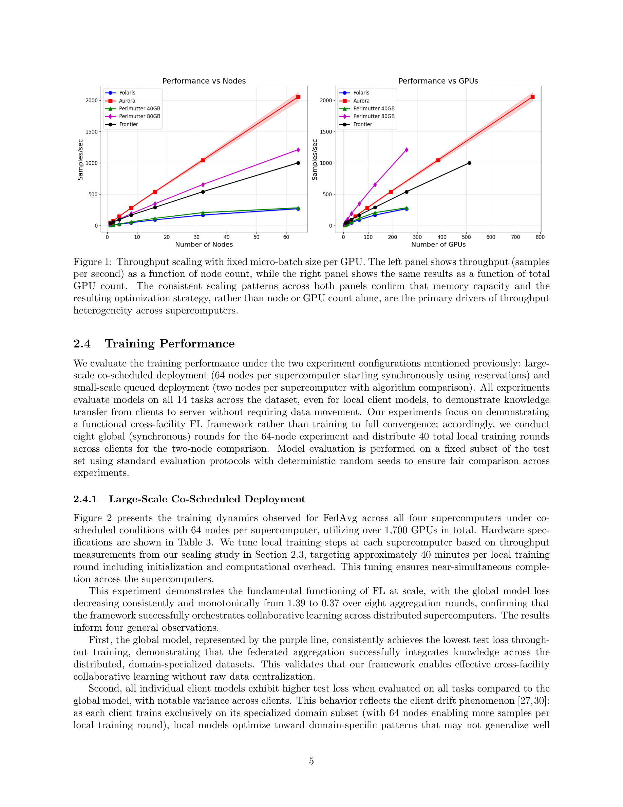
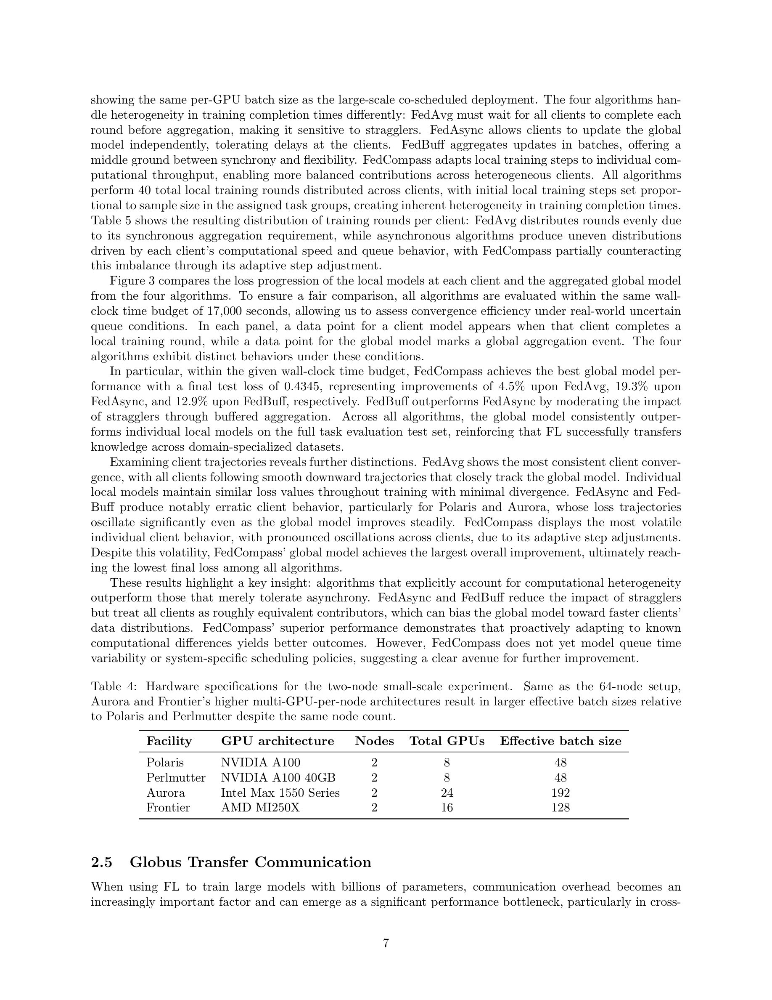
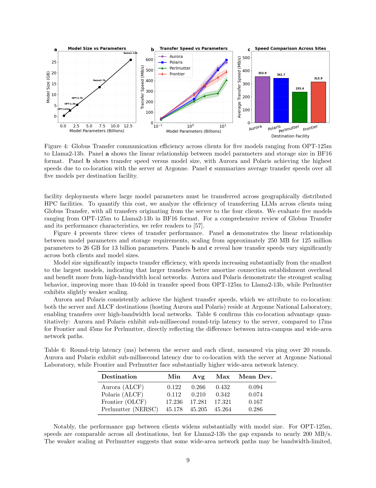
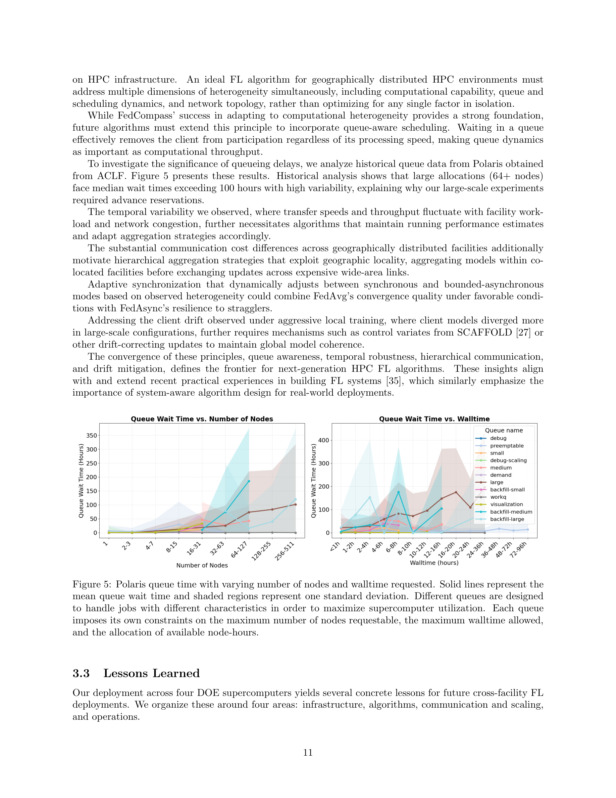

Figure 1

Figure 2
4개의 미국 DOE 리더십급 슈퍼컴퓨터(Polaris, Aurora, Frontier, Perlmutter)에서 연합학습(FL)을 실행하는 교차 시설 프레임워크를 설계하고, 화학 instruction 데이터셋에서 Llama2-7B를 연합 파인튜닝하여 이기종 HPC 환경에서의 FL 실행 가능성과 알고리즘 선택의 중요성을 실증한 연구.

Figure 3
과학 응용을 위한 AI는 개인정보 보호, 데이터 주권, 데이터 규모 등의 이유로 중앙 집중화할 수 없는 데이터에 대한 대규모 모델 학습이 필요하다. 연합학습(FL)은 원시 데이터 이동 없이 협력 학습을 가능하게 하지만, HPC 환경은 예측 불가능한 작업 스케줄러 큐잉 지연, 이기종 가속기 아키텍처, 시설별 독립적 보안 정책 등 클라우드/기업 환경과 근본적으로 다른 도전을 제기한다. 기존 FL 프레임워크(FATE, OpenFL, NVIDIA FLARE 등)는 이러한 HPC 특유의 제약을 다루지 않는다.

Figure 4

Figure 5
과학 연구를 위한 연합학습의 인프라적 기반을 다진 중요한 시스템 연구이다. 4개의 서로 다른 아키텍처(NVIDIA A100, Intel Max, AMD MI250X)를 가진 리더십급 슈퍼컴퓨터에서 실제로 FL을 실행하고 성능을 체계적으로 분석한 점에서 높은 실증적 가치를 지닌다. 특히 GPU 메모리 용량이 최적화 전략을 결정하여 처리량에 4배 이상 영향을 미친다는 발견, 그리고 FedCompass가 계산 이질성 적응을 통해 다른 알고리즘을 능가한다는 결과는 실질적으로 유용하다. 다만 화학 LLM의 과학적 성능 평가가 없고, 프라이버시 보호 기법이 미적용된 점에서 "privacy-preserving"이라는 프레임워크 명칭과 실험 내용 사이에 간극이 있다. 향후 scheduler-aware FL 알고리즘과 계층적 집계 전략의 개발로 이어질 수 있는 유망한 연구 방향을 제시한다.